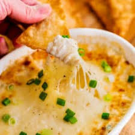
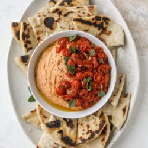
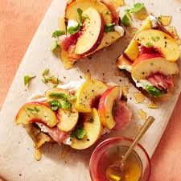
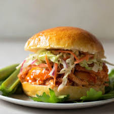
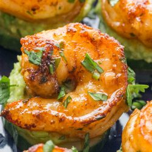
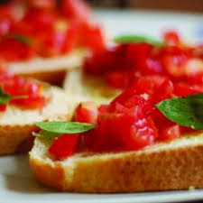
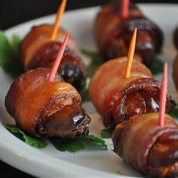
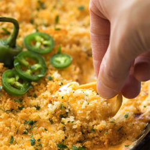

Restaurante Review
Leading experts talb about the restaurant
Francesco and Jane Bienni, founders and owners of San Francisco's world-class restaurant, have many reasons to celebrate. Cafe Townsend has been a San Francisco favorite for more than 19 years, and their latest restaurant venture, Cafe Isabella, will soon expand to more locations. Their biggest celebration is for their son Steven's recent graduation from New York's highly acclaimed Culinary Institute of America. San Francisco diners should join the Bienni's in their celebration because this graduation means an even better menu selection at Cafe Townsend, as Steven is lending his modern and innovative culinary talents to his father's traditional, Old World kitchen.
Those who have enjoyed Cafe Townsend and its world-class cuisine shouldn't worry - the stellar tableside service, scrumptious regional specials and menu favorites remain. But Steven's latest menu additions are something you don't want to miss.
"The utilization of regional seafood with the accompaniment of our fresh-grown herbs is something I'm avid about."
Appetizer
       Pasta
- Penne con Pomodoro Fresco e Provolone - Quill-shaped pasta with tomato sauce, garlic, fresh basil and provolone cheese.
- Orechiette alla Panorama - "Little ears" of pasta with calamari and tiger shrimp in a light tomato sauce with olive oil.
- Gnocchi al Forno con Salsiccia - Homemade pillows of potato and ricotta gnocchi in a hearty tomato sauce with sweet Italian sausage and pork shoulder, baked with fresh mozzarella.